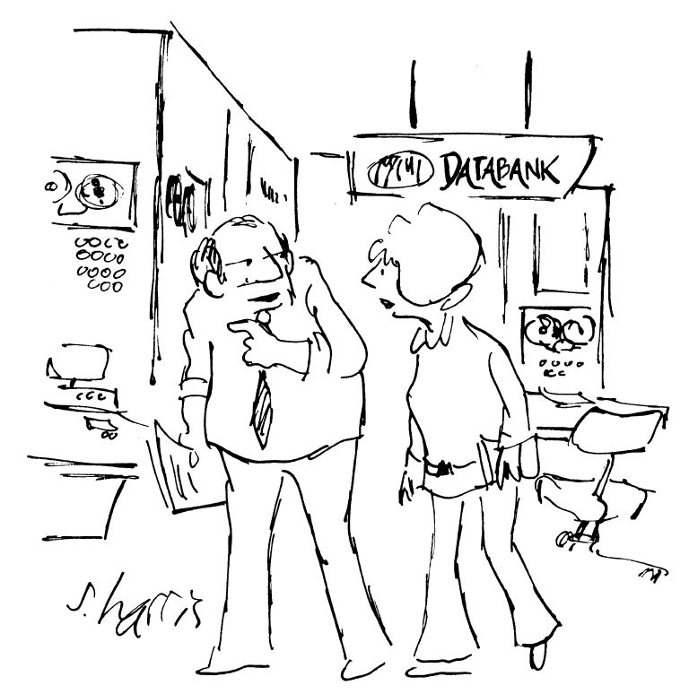

信息不再仅仅是权力，它还是大买卖。近年来，国际贸易中增长最快的组成部分就是服务部门，它占世界贸易的三分之一以上，而且份额还在继续扩大。作为现代工业化社会的一个核心特征，其对信息存储的依赖是司空见惯的事。当然，使用计算机可以大大提高收集、储存、使用、检索和传递信息的效率与速度。
政府和私人机构的日常职能要求其不断地收集有关我们的数据流，以便有效管理作为当代生活重要组成部分的无数的服务。提供保健服务、社会保障、信贷、保险，以及预防和侦查犯罪都需要有大量的个人数据，因此，个人必须愿意提供这些数据。这些通常高度敏感的信息的计算机化加剧了其被滥用的风险。
或者确实是粗心造成的损失。例如，英国最近发生了一些安全丑闻。2008年，载有数千名罪犯信息的电脑记忆棒丢失了；有关巴基斯坦基地组织和伊拉克安全局势的文件被内阁办公室情报官员落在了火车上；2007年，财政大臣承认，载有两千五百万人的个人信息和七百二十万个家庭的私人信息的电脑磁盘不见了。
发端
1960年代信息技术兴起，人们对不受控制地收集、储存和使用个人数据所带来的威胁感到日益焦虑。对“老大哥”的恐惧引起了一些国家要求对这些具有潜在侵扰性的活动进行管制的呼声。第一部数据保护法于1970年在德国黑森州颁布。接着是瑞典（1973年）、美国（1974年）、德国（1977年）和法国（1978年）的国内立法。
在这个初期阶段，产生了两项关键的国际文件：欧洲理事会1981年《关于在个人数据自动处理方面保护个人的公约》和经济合作与发展组织（OECD）1980年《关于保护个人数据隐私和跨界数据流动的指导原则》。这些文件制定了管制整个电子数据管理过程的明确规则。自经合组织的指导原则颁布以来，数据保护立法的核心是，在没有真正的目的和有关个人同意的情况下，不应该收集与可识别个人有关的数据。
在稍高一点的抽象层面上，它概括了德国宪法法院所谓的“信息自决”原则——表达基本民主理想的原则。
经合组织的原则
收集限制原则
数据质量原则
目的明确原则
使用限制原则
安全保障原则
开放性原则
个人参与原则
问责原则
OECD，《关于保护个人数据隐私和跨界数据流动的指导原则》（第二部分），1980年9月23日通过。
遵守或更确切地说，执行这一目标（以及相关的获取和纠正的权利）的情况已经融入了制定数据保护立法的约四十个法域中。这些法规大多以上述两项国际文件为基础。欧洲理事会《关于在个人数据自动处理方面保护个人的公约》第1条规定，其目的是在每一缔约国境内，确保每个人，不论其国籍或住所，在自动处理与其有关的个人数据方面，尊重其权利和基本自由，特别是其隐私权（“数据保护”）。
这些原则的重要性再怎么强调也不过分。特别是使用限制和目的明确原则，是公平信息实践的重要准则，加上以公平、合法方式收集个人数据的原则，这些原则提供了一个用以保障使用和披露这类数据的框架，并（在公平收集原则中）限制诸如截取电子邮件信息等侵入性活动。除非数据主体同意，使用或披露个人数据只能用于收集数据的目的或一些直接相关的目的。这一关键原则对管制互联网上个人数据的滥用有很大帮助。但这些原则要求，在已存在的地方更有效率，在部分实施的地方抓紧采用（最明显的是在美国）。
数据保护立法的制定，仅在一定程度上是由利他主义推动的。新的信息技术瓦解了国家边界；个人数据的国际流通是商业生活的一个常态特征。在数字世界中，如果B国没有对个人数据的使用进行控制，那么在B国计算机上检索个人数据，就会使得A国对个人数据提供的保护毫无意义。因此，有数据保护法的国家经常禁止向缺乏数据保护的国家转让数据。事实上，欧盟已在其一项指令中明确要求消灭这些“数据天堂”。如果没有数据保护法，各国就有可能被快速扩展的信息商业拒之门外。
有关处理个人数据的《欧洲联盟指令》
第3条
第6条
1995年10月24日的欧洲议会和欧洲理事会指令
数据保护的要点
任何数据保护法的核心，都是“在个案的情况下，以合法及公平”的原则收集个人数据，此处引用1995年中国香港的《个人资料（隐私）条例》的用语，作为这方面的范例。在此类数据的使用和披露方面，未经数据主体的同意，只可将其用于收集数据或某些直接相关的目的。
这些规定得到了六项“数据保护原则”的支持，而这六项原则实际上是立法机制的主干。简言之，第一项原则禁止收集数据，除非这些数据是为与数据使用者的职能或活动直接相关的合法目的而收集的，而且这些数据较之该目的而言是充分而不过分的。个人数据只能以合法和公平的方式收集。这就要求数据使用者向数据主体通报使用数据的目的、可向其传输数据的各类人员、数据主体提供数据是自愿的还是强制的、未能提供数据的后果，以及数据主体有权请求访问和更正个人数据。
第二项原则要求，数据使用者确保所持有的数据是准确和最新的。如果有疑问，数据使用者应该立即停止使用该数据。数据保存时间不应超过为达到数据收集目的所需的时间。第三项原则规定，在未经数据主体同意的情况下，个人数据不得用于收集数据时所通报的使用目的以外的任何其他目的。
第四项原则要求，数据使用者有义务采取适当的安全措施来保护个人数据。他们必须确保个人数据得到充分的保护，不受未经授权或意外的访问、处理、删除或被无权限的其他人使用。第五项原则是关于数据使用者须就所持有的个人数据的种类及其处理个人数据的政策和做法，向公众公布有关信息。这通常通过“隐私政策声明”来实现，该声明包括数据的准确性、保存期、安全性和使用的细节，以及在数据访问和数据更正请求方面采取的措施。
最后一项原则涉及数据主体有权获取关于其本人的个人数据，并要求提供该数据使用者所持有的此种个人数据的副本。如果发现数据不准确，则数据主体有权要求数据使用者更正记录。
受到侵扰或披露的受害人，可向个人数据隐私专员投诉违反这些原则的行为。他（她）有权发出“执行通知”，以强制侵权人遵守相关法律，如果侵权人不遵守这种通知，即为犯罪，可处以罚金和两年监禁。法律还规定了赔偿，包括对感情伤害的赔偿。
数据保护法的一个重要元素是隐私专员有权批准实务守则，为数据使用者及数据主体提供“实践指引”。隐私专员迄今颁布的都是实质性文件，是与有关各方进行详细和长时间磋商的结果。此外，虽然法律规定，数据使用者不遵守守则的任何部分，不应导致民事或刑事诉讼，但在这类诉讼中，数据使用者未能遵守守则的指控可作为证据予以采纳。
什么是“个人数据”？
任何数据保护法的出发点都是“个人数据”的概念，或者，在某些法规中，是“个人信息”的概念。在本书中，这个术语已经使用过无数次了，但它具体包括什么呢？尽管各国国内法规之间存在着差异，但它们都对这一用语有着相当宽泛的定义。《欧洲联盟指令》第2条（a）款对“个人数据”采用了以下表述：
但是，通过嵌入在产品或服装中的信息记录程序或RFID标签生成的数据又如何呢？它们不一定是指向个人，但由于它们便于对一个人做出决定，因此应在个人数据的标题下得到保护。
虽然现行立法对个人数据的定义明显包括获取或披露可被适当地称为侵犯隐私权的信息，但其范围之广博，忽略了这些问题。我个人认为，主要是一些私密或机密的信息，应以隐私的名义获得保护。但是，尽管该指令和国内数据保护立法忽视了这种类型的信息，但正如我们将看到的那样，立法并没有完全忽视这种信息。
尽管事实上任何数据保护制度对信息的保护远远超出了基本上属于私人性质的信息，而且其是（也许是不可避免的）程序性而非实质性的性质，但它们为更有效地应对挑战，特别是解决电子隐私问题提供了有用的路标。
《欧洲联盟指令》第25条规定，任何正在处理或待处理的个人数据的转让，必须受到其所送达法域的充分保护。保护是否充分，要参照数据的性质、拟处理的目的和期限、来源国和最终目的国、有关法域内的一般或部门条例，以及安全措施的性质和范围来评估。这立即危及世界上最大的市场——美国的商业前景。我将在下文再回到这个难题。
敏感数据
某些个人信息在本质上比其他信息更敏感，因此需要更有力的保护。这些类型的信息可能是什么？《欧洲联盟指令》第8条要求，成员国禁止处理“披露种族或族裔出身、政治观点、宗教或哲学信仰、工会成员身份，以及涉及健康状况或性生活”的个人数据。但是，这一限制有若干例外情况，其中包括除非国内立法另有明确规定，数据主体明确同意这种处理。在必要时，也允许在就业法领域中保护控制者的权利和义务，或保护数据主体的“重要利益”。
其他欧洲法域的立法也有类似的规定。英国1998年的《数据保护法》将下列数据归类为“敏感”信息：数据主体的种族或族裔出身、政治观点、宗教或类似信仰、工会成员身份、身心健康、性生活、实施或被指控实施的任何犯罪行为，或与实施或被控实施任何犯罪行为有关的任何诉讼程序。
诸如此类的任何清单显然都需要解释。你留在医院的扭伤脚踝的数据明显不如你HIV阳性状态的数据敏感。但是，一定程度的常识应该能够确保这样的区别得以划分出来。
鉴于其高度敏感性，保护病历隐私尤为重要。一个日益严重的问题是，有大量的非医务人员能够获得患者的数据。他们并不总是遵守严格的保密义务。
最近，欧洲人权法院对芬兰政府进行了惩罚，因芬兰政府未能保护医院保存的患者数据不受非法访问。这项判决确立了人权法规定的隐私权与保护个人信息之间的联系。法院认为，《欧洲联盟指令》第8条包含了确保个人数据安全的积极义务。该医院的病历档案系统泄露患者数据违反了芬兰本国的法律，即要求医院保护个人数据，防止未经授权的访问。上诉人是正在接受艾滋病治疗的医院护士，她怀疑她的同事通过阅读她的保密病历，发现她是艾滋病病毒感染者。虽然医院规定禁止查阅这些档案，但为了治疗的目的，实际上医院的所有工作人员都可以查阅患者的病历。
法院认为，医院没有安全的病历系统这一事实本身就足以使其对该名护士的私人医疗数据的泄露承担责任，因为其他原因都无法解释为什么会发生泄露。
同样令人不安的是，存储在磁盘或内存棒上的敏感数据会被粗心大意地丢失。例如，2008年底，伦敦北部一家医院丢失了存有近一万八千名国民保健服务的个人信息的磁盘。医院承认，磁盘是在邮寄时丢失的！
艾滋病患者或艾滋病病毒感染者的病例特别敏感。然而，有人已经提出了一些论据来证明违反这些患者的医疗私密性的正当性。特别是医生需向公共卫生当局报告病例，以遏制疾病的蔓延。事实上，在一些法域，艾滋病是一种需要报告的疾病，因此产生了医生向当局通报艾滋病出现的法律义务。如果要有效地研究艾滋病的起因和扩散，就必须提供准确的信息，这一点显然非常重要。但没有令人信服的理由说明这些数据为什么不能匿名。鉴于这类信息的披露可能产生痛苦的后果，卫生部门有责任证明披露数据的好处大于保护患者的私密性权利。
事实上，如果不能充分保护这些数据，很可能适得其反，许多人可能就不会接受病毒检测。这将使信息来源枯竭，同时也会间接导致疾病的进一步传播。
在医疗数据安全方面的其他一些低级失误使人们对数据保护法的正确执行没有多少信心。伦敦一家顶级医院的两名医生最近进行的一项调查显示，四分之三的医生携带着带有机密数据的不安全的记忆棒。医生经常携带含有姓名、诊断、X光片和治疗细节的记忆棒。在这家医院的105名医生中，有92人持有记忆棒，其中79人的记忆棒存有机密信息，这里面只有5个人的记忆棒有密码保护。
数字数据
计算机和计算机网络的普及实现了几乎可以即时地存储、检索和传输数据——这与手工归档系统的世界相比真是天壤之别。更引人注目的是，控制互联网及其运作或内容的努力，都明显地失败了。事实上，它的无政府状态和对监管的抵制被广泛吹嘘为互联网的力量和吸引力。除了人们有理由认为自己的谈话是私密的问题之外，互联网上的交流性质也会产生不同的问题和期望，因此，需要不同的解决办法。
虽然对数字电话系统的监控（见第一章）看起来与电子邮件的发送和接收类似，但互联网的使用对监管提出了棘手的挑战。例如，虽然监听我的电话或拦截我的信件很简单，但互联网文化鼓励了多种行为，对这些行为的观察为那些希望监管或控制私密数据和敏感数据的人提供了不可抗拒的机会。
数据保护和隐私
但是，你有权问，数据保护与隐私有什么关系？两者之间的关系并非一开始就显而易见。它们显然是重叠的；实际上，后者通常被当作是激发前者的利益。但是，即使在信息社会，个人隐私并不总是被收集、使用、储存或转让个人数据所侵犯。这不仅是因为“个人数据”在数据保护法规中被广泛定义为包括有关“个人”的信息，而“个人”不必然是“私人”的。简单的答案是，在试图保护个人数据时，真正私人性质的信息也会无可奈何地落入保护网中。事实上，认为我们在定义隐私方面遇到的一些问题，在数据保护的框架下可能会得到更实际的解决，也并非完全不可能。

图16 收集和使用个人数据容易且常被不诚实地证明符合公共利益
想想第四章中讨论的派克和卡罗琳公主的案例。欧洲人权法院根据《欧洲人权公约》第8条关于隐私权的条款对它们进行了审议，核心问题是在公共场所秘密摄影的合法性。数据保护法并不是为了全面保护个人隐私而制定的，但它们通常规定，必须以合法和公平的方式收集个人数据。因此，这种立法为隐私权提供了附带保护。
美国之谜
或者也许正是由于其信息市场的规模，美国一直在抵制按照欧洲的方式采取数据保护立法——至少在私营部门是如此。美国的自我管制方法与欧盟模式的全面方法形成了鲜明的对比。这在一定程度上归因于一种回避强有力的监管机构的政治文化——在2008年次贷危机的背景下，这太过明显了。很难想象，独立的联邦隐私专员的任命会获得批准。
为了避免与欧洲的贸易战，美国创建了试探性的“安全港”框架。该计划旨在让欧盟确信，支持该计划的美国公司将提供欧盟数据保护指令所定义的充分的隐私保护。欧盟于2000年批准了这一折中方案。
令人失望的是，该计划只吸引了少数美国公司，因为美国公司不喜欢该计划给它们带来的可察觉的负担。欧盟委员会注意到，一些美国公司并没有遵守这一要求，却在它们可公开获得的隐私政策中声明，它们遵守了这七项原则。此外，这些隐私声明通常并不包含所有的原则，或者声明中存在翻译上的错误。
安全港原则
安全港不安全？
詹姆斯·B.鲁尔，《处于危险中的隐私》，牛津大学出版社，2007年，第138页。
实施“安全港”政策的一个重大缺陷是，采用该制度的公司没有一个执行投诉的机制。
网上个人数据保护
未来就在此处。我们所创建的数字世界不久将出现光纤网络，以数字码传送几乎无穷的电视频道、家庭购物和银行业务、交互式娱乐和视频游戏、计算机数据库和商业交易。这个宽带通信网络将把家庭、企业和学校与过多的信息资源连接起来。当个人信息以比特的形式呈现时，其易被滥用的情况，特别是在互联网上，是不言而喻的。
我们已建立了一个多功能的电信网络，将以前独立的所有网络连接起来。而且，过去功能单一、固定和大型硬件现在变成了多功能、便携式和小型化的，我的iPhone可供我收发电子邮件、做买卖、看电视、读报等。
计算机的容量以惊人的速度增长；根据所谓的“摩尔定律”，计算机的容量每十八个月翻一番，而其价格却不受影响。换言之，经过十五年的时间，计算机的处理和储存能力增强了一千倍。
匿名和身份
如第一章所讨论的那样，匿名是一种重要的价值。但这不一定是我所追求的绝对匿名。相反，对某个人而言，我的信息具有计算机与法律研究中心主任伊夫·普莱所说的“功能的不可识别性”。因此，匿名的概念也许应该被“化名”或“不可识别性”所取代。当然，这项权利不能是绝对的。必须兼顾国家安全、国防，以及侦查和起诉犯罪的要求。这可以通过使用由专业服务提供商向个人提供的“化名身份”来实现，在法律规定的情况下，专业服务提供商会被要求披露用户的实际身份。
传统账户忽略了匿名作为“新隐私”特征的价值和重要性，这是可以理解的。主体的不稳定性是后现代主义的一个中心主题。互联网似乎是一种活生生的证据，证明了一种普遍的、统一的真理的缺失，以及诸如雅克·拉康等后现代主义偶像作品中所出现的自我的偶然性和多样性的思想。
互联网上身份的流动性是其主要吸引力之一，但确定发送者身份的难度可能越来越大，特别是出于商业目的。随着越来越多的业务在网上进行，数字认证可能会变得越来越重要。
数据保护的未来
上面描述的当前数据保护的制度并非灵丹妙药。这一制度不够完善，因此互联网和RFID、GPS、移动电话等技术的进步给保护隐私权带来了无数难以应付的挑战。普莱很好地描述了这些发展，并提出了一套新的原则来管理这些经常令人惴惴不安的发展。
电子通信服务环境的普遍性和多功能性，以及它们的交互性，网络、服务和设备生产商的国际性，终端和网络功能的不透明性，都威胁到网上隐私。因此，普莱提出了一系列21世纪的原则，包括加密和可逆匿名原则。这对于保护我们的通信内容不被获取，起到了至关重要的作用。普通计算机用户已负担得起加密软件。
另一项原则是鼓励采取符合或改善受法律保护人员处境的技术办法。这可能涉及要求软件和硬件都提供必要的工具，以遵守数据保护规则。它们应该包括最大限度的保护功能，并以此作为标准。
这项义务也适用于处理个人数据的人选择最适当的技术来尽量减少对隐私的威胁。应对第一章所述的促进隐私保护技术的开发给予鼓励和补贴，建立自愿认证和认证制度，并以合理的价格提供促进隐私保护技术。
硬件操作应该透明；用户应该对发送和接收的数据有完全的控制权。例如，他们应该能够很容易地确定在他们的计算机上聊天的程度、收到了哪些文件、其用途是什么，以及发送者和接收者是谁。任何试图阻止弹出窗口的人都会知道这个过程是多么的困难，令人十分沮丧。若没有激活信息记录程序抑制器，就不能被理解为全权同意对其进行安装。
我们的网上生活所需要的保护相当于我们在物质世界中作为消费者所享有的法律保护。为什么网上冲浪者应该容忍资料收集、垃圾邮件、差异化服务访问等？网上消费者保护立法可为一系列服务敞开大门，包括规定互联网服务供应商的职责、搜索引擎、数据库，以及防止不公平竞争和商业做法的措施。此外，正如普莱所主张的那样，为什么硬件和软件的产品责任不应超出人身和财产损害的范围，而应当包括数据保护规范的侵权责任？
Web2.0的出现使社交网络大规模爆发，Facebook和MySpace等社交网站、YouTube和Flickr等视频分享网站（这些网站均可用于共享照片），以及用户自己编写的在线百科全书维基百科的出现，明显有牺牲隐私的代价。社交网络的成员可能对广泛传播其个人信息的后果一无所知。当然，网络供应商应该告诉他们如何限制这些数据被访问。他们应该为一般的个人数据提供选择退出渠道，为敏感数据提供选择进入渠道。用户需要知道，他们的个人数据几乎没有或根本没有受到任何可以防止被复制的保护，无论这些数据是否与自己或他人有关。
除此之外，还存在其他的隐私风险。例如，Facebook允许用户在自己的简介中添加小工具，并在不离开Facebook网站的情况下使用第三方应用程序。但这引起了一些隐私问题。当用户安装Facebook应用程序时，该应用程序可以看到用户能看到的任何内容。因此，应用程序可以获得关于用户、用户的朋友，以及同一个网络的其他成员的信息。没有任何东西可以阻止应用程序的所有者收集、查看和滥用这些个人信息。Facebook的使用协定条款敦促应用程序开发者不能这样做，但Facebook没有办法发现或阻止他们从事这些活动。虽然在加拿大隐私专员的压力下，Facebook最近修改了其隐私政策，从而使得应用程序在没有得到每个朋友明确许可的情况下无法访问用户的好友信息。用户通常把他们在社交网站上的个人简介视为一种自我表达的形式，但这些信息对营销公司、相互竞争的网站和身份盗用者而言具有商业价值。数据挖掘具有严重的隐私问题：它暴露了在其他情况下可能被隐藏的信息。这是一个从不同角度分析数据，并将其归纳为可用于增加收入、降低成本或两者兼而有之的信息的过程。数据挖掘软件允许用户从多个角度分析数据、对数据进行分类，并评估已识别的关系。换言之，它可以在大型关系数据库中搜索众多字段之间的相关性或模式。
图17 英国政府关于推行指纹和其他个人数据中央数据库的提议引起了相当大的异议
尽管数据挖掘在商业、医学或科学领域中非常有价值，但它确实会对隐私造成风险。在没有模式的情况下，原始数据片段基本上是毫无价值的。但是，当挖掘数据时，如果挖掘出的数据揭露出原本无害的行为模式，隐私威胁就会迅速地显现出来。